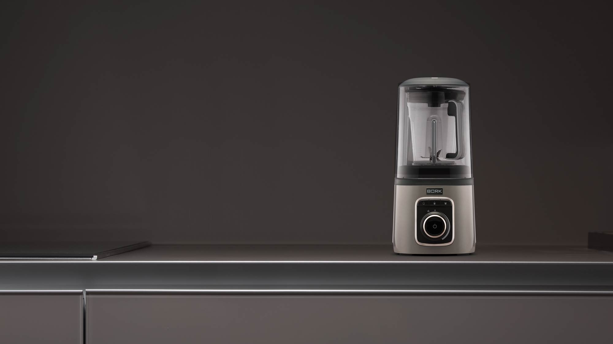
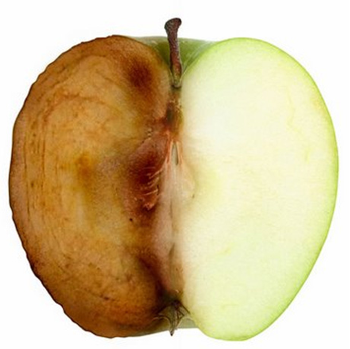
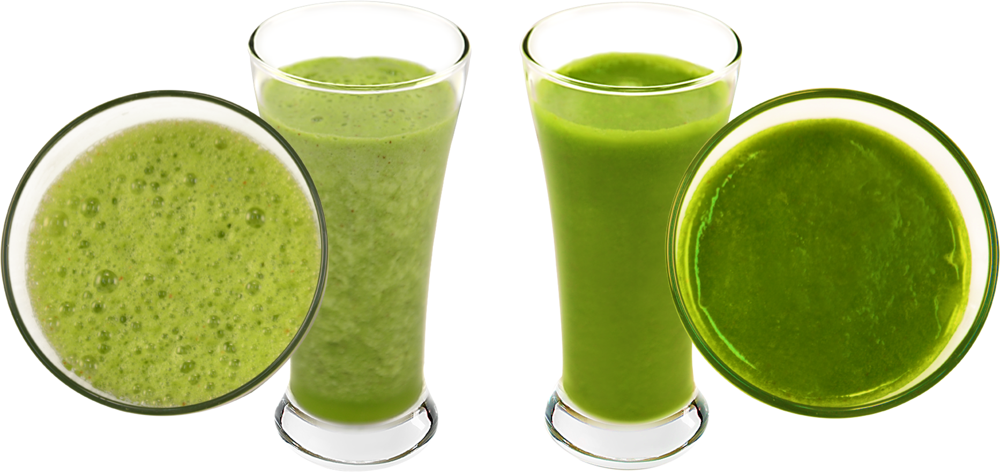
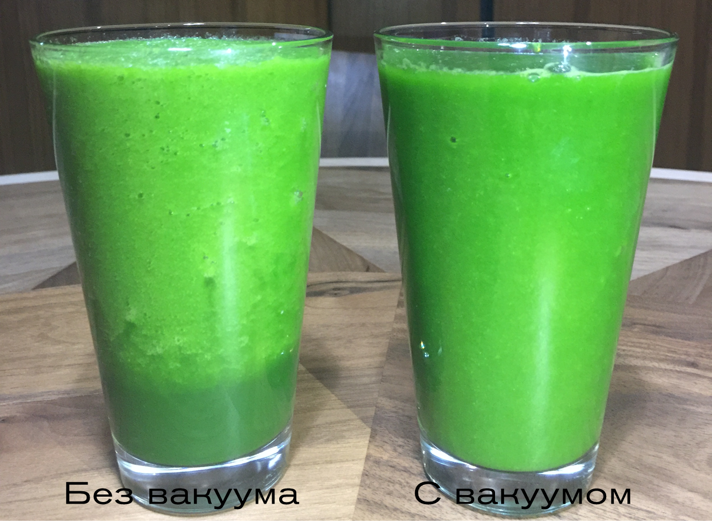
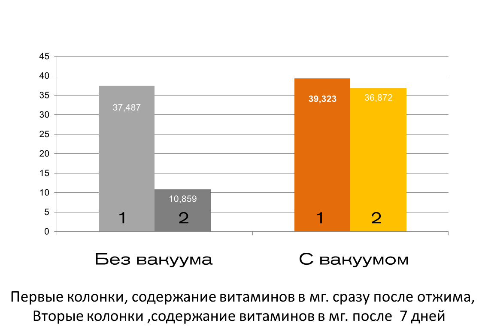
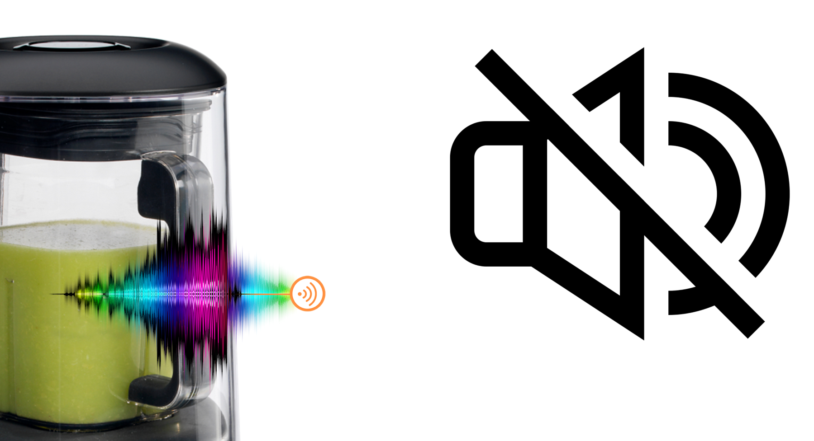
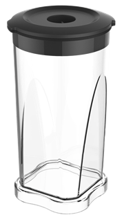
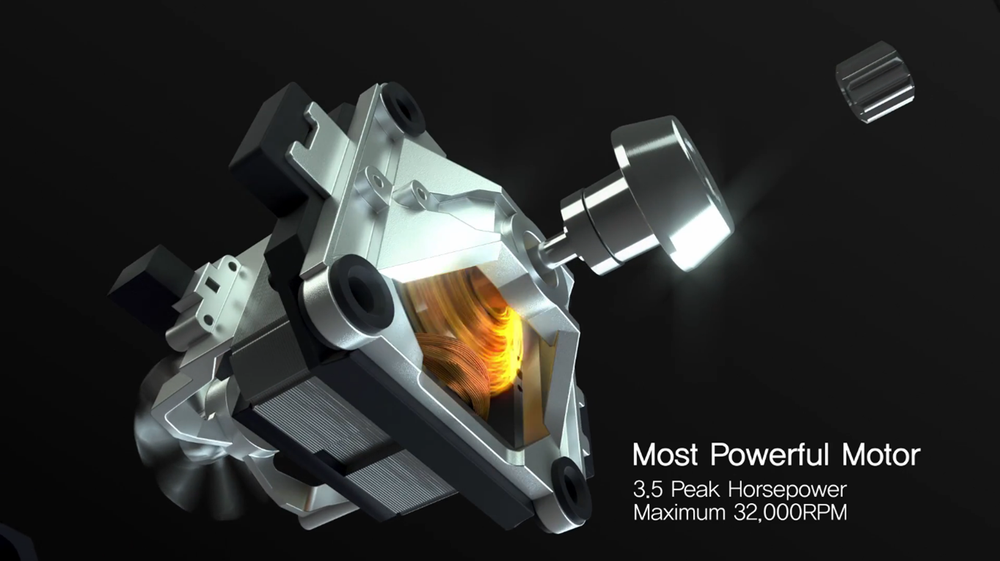
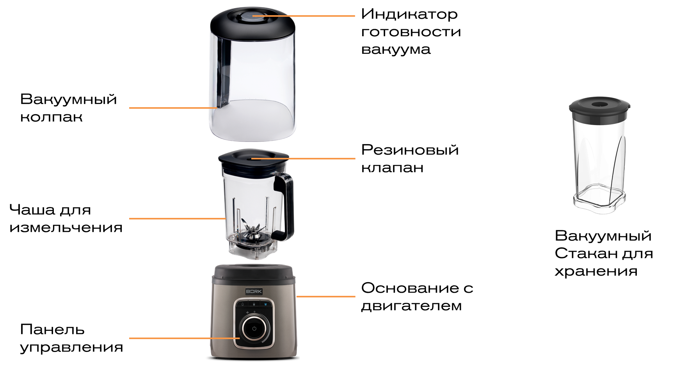

Блендер B601
Уникальная разработка для максимально эффективного измельчения и смешивания.
О пользе смузи и соков в блендере
Перемешивание фруктов и овощей в блендере, позволяет сохранить все необходимые витамины, минералы, ферменты, белки и клетчатку, такой полезной для пищеварительной системы. Это полноценная еда.
Окисление
Одной из самых распространенных проблем блендеров и соковыжималок является то, что во время смешивания присутствует воздух. Из-за этого в измельчаемом продукте появляются пузырьки, цвет становится мутным, а окисление и потемнение продукта начинается немедленно. Чем выше скорость измельчения, тем больше воздуха смешивается с продуктом, окисляя и расслаивая его на фракции. При этом теряется не только вкус, цвет, запах, но и самое главное, - питательные вещества продукта.
Уникальная технология измельчения в вакууме
До начала измельчения и смешивания продуктов блендер BORK B601 выкачивает из чаши остаточный воздух, тем самым устраняя причину окисления и как следствие - разрушение питательных веществ. К тому же, под воздействием вакуума смешивание продуктов между собой происходит гораздо эффективнее и лучше, а переработка их легче и проще. Происходит это следующим образом. При откачке воздуха из чаши, давление в продуктах остается неизменным. Как только начинается измельчение, продукты стараются уравнять внутреннее давление с вакуумом в чаше, выбрасывают из себя остатки воздуха, что приводит к более полному смешиванию волокон продуктов между собой. Другими словами, вакуум помогает не только предотвратить окисление продукта и сохранить питательные вещества, но и облегчает процесс смешивания волокон продукта (клетчатки) между собой. Именно таким образом вакуумный блендер высокотехнологично измельчает не только волокна мякоти, но и кожуру «грубой» клетчатки. Вы получаете вкусный, однородный, и полезный напиток.
Где применяется вакуумизация деаэрация

Деаэрацию — удаление воздуха из продукта — проводят на разных стадиях технологического цикла с целью предотвращения окисления. Эта технология активно применяется в производстве детского питания, ведь очень важно сохранить все полезные микроэлементы для деток.
Новые возможности от bork b601
Мы всегда слышим слова о том, что смузи, соки и коктейли необходимо выпивать максимально быстро после приготовления, так как витамины быстро погибают. Прилагаемый к блендеру стакан для вакуумизации позволяет сохранить витамины и минералы даже после недельного хранения! Ведь это так удобно, брать с собой полезные, богатые витаминами напитки.
Воздушные молочные коктейли
Блендер BORK B601, способен работать в режиме вакуума и без него. В частности режим без вакуума идеально подойдёт для приготовления молочных коктейлей. За счёт высоких оборотов, до 32 000 об.мин., коктейли насыщаются пузырьками кислорода и становятся воздушными!
Низкий уровень шума
Колпак вакуумного блендера снижает уровень шума во время его работы, благодаря чему вы сможете готовить блюда для всей семьи в любое время, не беспокоя близких.
Многофункциональность и легкость управления
Автоматические программы с индивидуальными алгоритмами позволяют обрабатывать ингредиенты и готовить напитки нажатием на одну кнопку. В автоматических режимах измельчение ингредиентов осуществляется со скоростью до 32 000 об/мин. Плавная регулировка скорости работает в диапазоне от 2 000 до 20 000 об.мин.
Сверхмощный и надежный мотор
Энергоэффективный двигатель c потребляемой мощностью 1500 Вт. и выдаваемой мощностью 3,5 л.с. обеспечивает быстрое и эффективное измельчение ингредиентов со скоростью до 32 000 об/мин. При этом система безопасности автоматически отключает прибор при перегреве и позволяет начать работу только при правильной сборке блендера.
Комплектация и рекомендации по использованию
Чаша для измельчения: Материал чаши – Tritan, максимальная загрузка чаши для измельчения: Жидкие продукты – до 1200 мл.; Коктейли с молоком – до 800 мл. ;Сухие продукты – до 600 мл. Для очистки чаши, добавьте 500 мл. теплой воды с небольшим количеством жидкого моющего средства в чашу и включите блендер на средней скорости на 15–20 секунд. Затем промойте чашу в проточной воде и протрите мягкой сухой салфеткой.
Вакуумный стакан для хранения: Максимальная загрузка стакана для хранения: Коктейли – 700 мл.; Сухие продукты (обычное хранение) – 600 мл.
Вакуумный колпак: Использование вакуума значительно снижает уровень шума. Индикатор готовности вакуума становится синим в момент запуска вакуума, и вновь меняет цвет на белый в момент окончания процесса.
Сейлз аргументы
- Сохраняет все витамины, энзимы и антиоксиданты.
- Идеальная текстура смузи, пюре и коктейлей.
- Теперь не обязательно пить соки и смузи сразу.
- Два режима использования: с вакуумом и без.
- Невероятно тихая работа.
- Интеллектуальная система в режиме AUTO.
- Высококачественные материалы.
- 3 системы безопасности.
- Страна изготовитель: Южная Корея
Технические характеристики
Мощность: 1500 Вт
Объем чаши: 1300 мл
Материал чаши: Полимер EASTMAN TRITAN™
Число программ: 3
Функция Pulse: Есть
Число оборотов: До 32000 об/мин
Регулировка скорости: Плавная
Вес: 6,2 кг
Срок гарантии: 1 год
Вакуумный колпак: 1 шт.
Стакан для хранения: 1 шт.
Защита от перегрузки: Есть
Длина кабеля: 1 м
Материал корпуса: Пластик
Страна производства: Корея